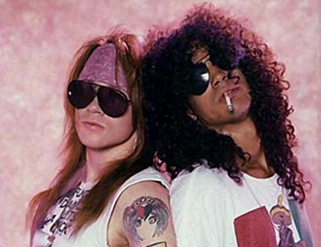

Guns N' Roses este o formatie americanã de hard rock, formatã în Los Angeles, California 1985.Numele ei provine de la membrii fondatori,Gun Slash si Axl Rose,prin contopirea a doua formatii:L.A.Guns si Hollywood Rose.
Axl Rose(stanga) si Gun Slash(dreapta)
Dupã ce a vãzut un spectacol al celor de la Guns N' Roses la Troubadour, Tom Zutaut, unul dintre sefii A&R Geffen Records, i-a avertizat in mod fals pe ceilalti scouteri ca "sunt naspa", pentru a avea mai mult timp la dispozitie sa-i convinga sa semneze un contract. Axl Rose a cerut, si a primit, un avans de 75.000 $ de la Zutaut înainte de a dezvalui cã îi promisese unei sefe A&R de la Chrysalis, ca trupa va semna cu ea, daca aceasta va merge goala pe Sunset Strip. Timp de cinci zile, Zutaut a privit nervos de la fereastra biroului sau asteptand sa vada o sefa A&R goala, inainte de a incheia afacerea. Alan Niven a fost angajat ca manager al trupei, si echipa s-a dedicat inregistrarii albumului de debut. In vremea cand muzica pop era dominata de genul dance si pop-metal, Guns N’ Roses au adus rock & roll-ul urat, rau, care a daramat toate topurile din acea vreme. Nu erau baieti cuminti, baietii cuminti nu asculta rock & roll. Pe langa toate astea erau si amuzanti, vulnerabili si ocazional sensibili, fapt rezultand din piesa Sweet Child O’ Mine.